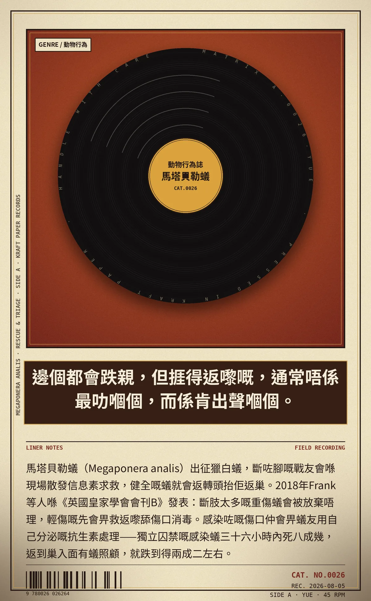

邊個都會跌親，但捱得返嚟嘅，通常唔係最叻嗰個，而係肯出聲嗰個。
馬塔貝勒蟻（Megaponera analis）出征獵白蟻，斷咗腳嘅戰友會喺現場散發信息素求救，健全嘅蟻就會返轉頭抬佢返巢。2018年Frank等人喺《英國皇家學會會刊B》發表：斷肢太多嘅重傷蟻會被放棄唔理，輕傷嘅先會畀救返嚟舔傷口消毒。感染咗嘅傷口仲會畀蟻友用自己分泌嘅抗生素處理——獨立囚禁嘅感染蟻三十六小時內死八成幾，返到巢入面有蟻照顧，就跌到得兩成二左右。